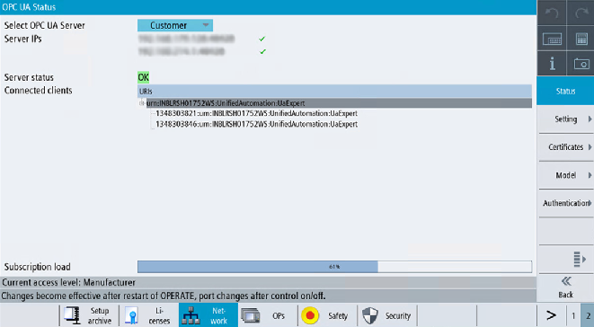

Additional to the server status information available via OPC UA, there is a SINUMERIK Operate screen, which shows the actual status of the OPC UA server.
To open the status screen, select the operating area "Startup > Network" in SINUMERIK Operate, then press the "OPC UA" softkey. The OPC UA status screen is the first screen to be displayed.
Status
Value | Description | Further explanation |
|---|---|---|
Server IPs | Server IPs and ports of the company network, systems network or service network where the OPC UA server is accessible | If the server IP is connected, then a green tick is displayed in front of the IP. If the server IP is disconnected, then a red cross is displayed in front of the IP. |
Server status | Possible status of the server:
| There are too many sessions used by other clients. External clients are allowed to create 10 sessions with SINUMERIK ONE. The session limitation is 11 in the configuration file, to have one more session for the status client. |
Connected clients | Clients which are connected to the server Example:
| |
Subscription load | Utilized capacity of the OPC UA server regarding possible subscriptions (see chapter, Technical data ), not the overall load. |